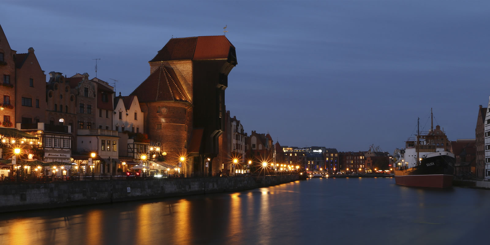
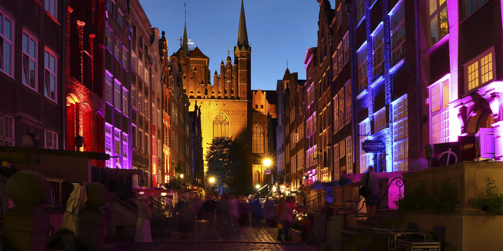
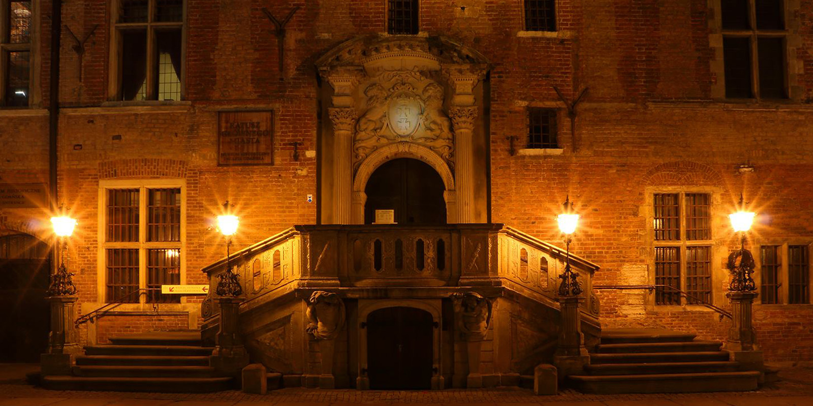

Gdańskie zabytki - Daj się skusić!
Gdańskie Stare Miasto to wymarzone miejsce na spokojny spacer szlakiem zabytków. Możemy zacząć od razu na Dworcu Głównym i powoli klucząc uliczkami znaleźć wszystkie największe atrakcje dawnego Gdańska. Po drodze napotkamy kawiarnie i kluby, w których skupia się tętniące życie Gdańska. Pokażemy Ci najciekawsze z nich, bez których Twoja wyprawa nie może się obyć.
Długi Targ

Żuraw

Mariacka

Ratusz